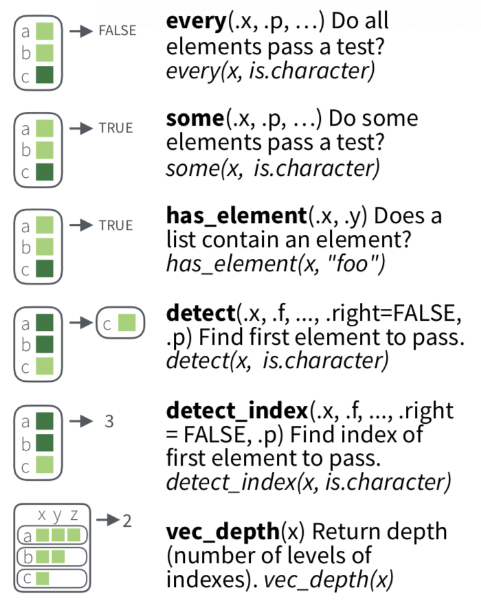
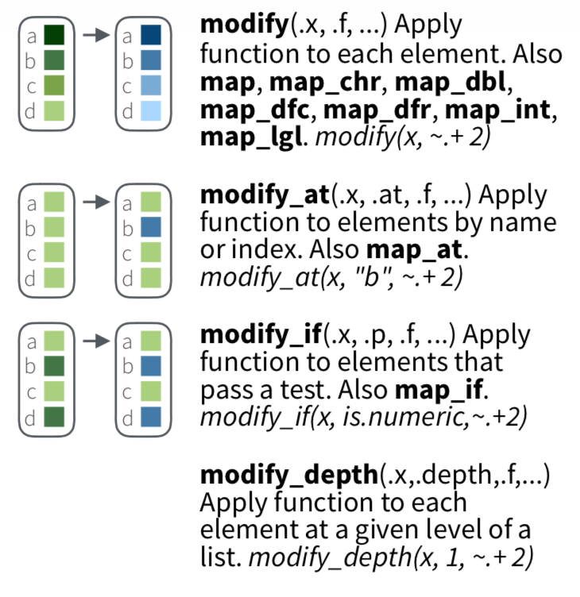
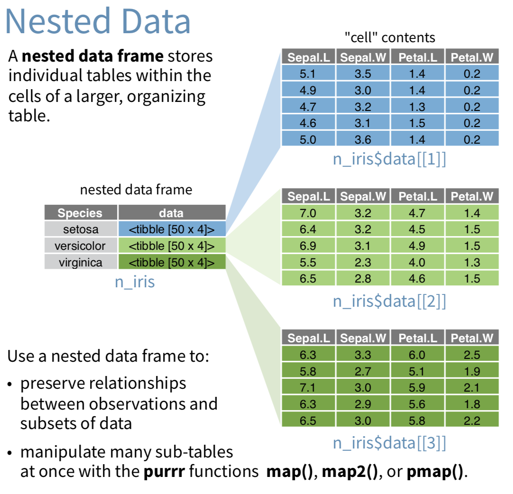

R lectures
21/05/2017
Repaso de la clase anterior
Estadística descriptiva
Conceptos para entender la estructura de un grupo (digamos, N > 30) de datos.
Una manera de hacer estadística descriptiva en columnas de listas (o data.frames) es con sapply:
sapply(mydata, mean, na.rm=TRUE)
donde podemos usar mean, sd, var, min, max, median, range, o quantile, entre otras).
O summary(), que es equivalente y funciona con data.frames.
Tenemos también group_by() + summarise() con las mismas funciones básicas.
Distribuciones
En general R usa la siguiente convención:
dDIST(x, ...)es la función distribución de probabilidad (PDF). Devuelve la prob. de observar un valor xpDIST(x, ...)es la función cumulativa de probabilidad (CDF). Devuelve la prob. de obervar un valor menor a x (mayor si usamoslower.tail=F)rDIST(n, ...)es un generador de números aleatorios que devuelve n valores sacados de una distr. DIST.qDIST(p, ...)es la función cuartil que devuelve el x que corresponde al percentilpde DIST. Silower.tail=F, devuelve1menosp.

Para ver las distribuciones disponibles, ver el task view de distribuciones
Modelado estadístico
Modelado se refiere a proponer determinadas relaciones entre variables, típicamente cuál es la relación entre una variable dependiente o variable respuesta y otras variables independientes o variables explicativas.
En R la función lm() se usa para regresión lineal (linear models) y glm() para generalized linear models.
Regresión lineal - lm()
Construimos un "modelo" (una relación) entre variables dependientes e independientes optimizando parámetros para poder predecir.
1 - Propongo una determinada relación de variables.
2 - Calculo coeficientes del modelo.
3 - Compruebo que tan bien se ajusta el modelo a nuevas observaciones.
y[i] ~ f(x[i,]) = b[1] x[i,1] + ... b[n] x[i,n]
## b[i] son los coeficientes o betas
Regresión lineal generalizada - glm()
Los modelos lineales asumen que el valor predicho es continuo y que los errores van a ser "normales". Los modelos lineales generalizados relajan estas suposiciones.
## expresión general
glm(formula, family=familytype(link=linkfunction), data=)
Ejemplito: Regresión logística, para variables categóricas.
# F es un factor binario
# x1, x2 y x3 son predictores continuos
fit <- glm(F~x1+x2+x3,data=mydata,family=binomial())
summary(fit) # resultados
exp(coef(fit)) # coeficientes
predict(fit, type="response") # predicciones
residuals(fit, type="deviance") # residuos
Estadística avanzada - material infinito
Manejando listas con purrr
Funciones *map*() de purrr

map(.x, .f, ...)
Como lapply, aplica la función f a los elementos de la lista x.
x1 <- list(
c(0.27, 0.37, 0.57, 0.91, 0.20),
c(0.90, 0.94, 0.66, 0.63, 0.06),
c(0.21, 0.18, 0.69, 0.38, 0.77)
)
map(x1, max)
[[1]]
[1] 0.91
[[2]]
[1] 0.94
[[3]]
[1] 0.77
Atajos
Puedo pasar fórmulas, nombres o posiciones a map():
## Puedo pasar funciones:
models <- mtcars %>%
split(.$cyl) %>%
map(function(df) lm(mpg ~ wt, data = df))
## O directamente una *fórmula de un solo lado*:
models <- mtcars %>%
split(.$cyl) %>%
map(~lm(mpg ~ wt, data = .))
## Puedo pasar argumentos con subsetting:
models %>%
map(summary) %>%
map_dbl(~.$r.squared)
## O pasar directamente el nombre:
models %>%
map(summary) %>%
map_dbl("r.squared")
## Finalmente, puedo hacer pasar posiciones:
x <- list(list(1, 2, 3), list(4, 5, 6), list(7, 8, 9))
x %>% map_dbl(2)
#[1] 2 5 8
Funciones *map*() de purrr
Con purrr, uno siempre elige explícitamente el tipo de salida.

Ejemplos de salidas de map()
map_dbl(x1, max)
[1] 0.91 0.94 0.77
map_chr(x1, max)
[1] "0.910000" "0.940000" "0.770000"
map2(.x, .y, .f, ...)
Si tengo dos listas como input, uso map2.
mu <- list(5, 10, -3)
sigma <- list(1, 5, 10)
map2(mu, sigma, rnorm, n = 5) %>% str()
#> List of 3
#> $ : num [1:5] 4.78 5.59 4.93 4.3 4.47
#> $ : num [1:5] 10.85 10.57 6.02 8.82 15.93
#> $ : num [1:5] -1.12 7.39 -7.5 -10.09 -2.7

pmap(.l, .f, ...)
Para más argumentos que dos, tenemos pmap().
n <- list(1, 3, 5)
mu <- list(5, 10, -3)
sigma <- list(1, 5, 10)
args1 <- list(n, mu, sigma)
args1 %>%
pmap(rnorm) %>%
str()
#> List of 3
#> $ : num 4.55
#> $ : num [1:3] 13.4 18.8 13.2
#> $ : num [1:5] 0.685 10.801 -11.671 21.363 -2.562

Varias funciones: invoke_map(.f, .x, ...)
f <- c("runif", "rnorm", "rpois")
param <- list(
list(min = -1, max = 1),
list(sd = 5),
list(lambda = 10)
)
invoke_map(f, param, n = 5) %>% str()
#> List of 3
#> $ : num [1:5] 0.762 0.36 -0.714 0.531 0.254
#> $ : num [1:5] 3.07 -3.09 1.1 5.64 9.07
#> $ : int [1:5] 9 14 8 9 7

walk(), walk2() y pwalk()
Uso estas funciones cuando no me importa el valor de retorno, si no un efecto secundario como una información en pantalla o un archivo que se guarda. Estas funciones devuelven (invisiblemente) el mismo objeto que reciben, por lo que es posible usarlas en medio de un pipe.
library(ggplot2)
plots <- mtcars %>%
split(.$cyl) %>%
map(~ggplot(., aes(mpg, wt)) + geom_point())
## usamos str_c para agregar extensión
paths <- stringr::str_c(names(plots), ".pdf")
## ejecuto ggsave(filename, plot) simultáneamente
pwalk(list(paths, plots), ggsave, path = tempdir())
Filtros
Tenemos un número de funciones para filtrar listas, de acuerdo a predicados .p.
Resúmenes
Del mismo modo, tenemos algunas funciones para seleccionar subconjuntos de elementosm de acuerdo a criterios.
Trasformaciones
Finalmente, podemos modificar subconjuntos de elementos de acuerdo a criterios (posición, etc.).
Datos anidados: nest()
A veces es útil tener listas rectangulares donde el contenido de las celdas son a su vez listas.
Datos anidados: nest()
Ejemplo de workflow en el que usamos listas anidadas y manipulamos con purrr, conservando relaciones.

Práctica purrr
- Usar las funciones
map()para:- Calcular la media de cada columna de
mtcars. - Determinar el tipo de cada columna de
nycflights13::flights. - Calcular la cantidad de valores únicos de cada columna de
iris. - Generar 10 números aleatorios para mu=−10, 0, 10, y 100.
- Calcular la media de cada columna de
- Con los datos de
airqualilty, para cada mes, hacer una regresión lineal del ozono como variable respuesta y temperatura como variable explicativa. Del resultado, extraer un vector de doubles que contenga el elemento 'adj.r.squared' del modelo resultante. Preferentemente, escribir todo el procesado en una línea utilizando pipes ypurrr.